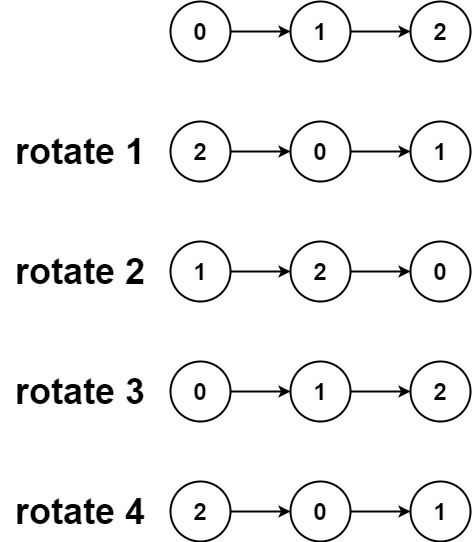

61. 旋转链表
数长度 n、k 对 n 取模；尾结点接上头成环，从 head 走 n-k 步到新尾，断开即得结果。
思路
- 特判：空链表、单结点、
k=0直接返回；k %= n，转n圈等于没转。 tail.next = head把链表接成环。- 新头是倒数第
k个结点，从head走n-k步落到新尾：newHead = newTail.next，再newTail.next = null断开。
图解
最优解
1class Solution {2 public ListNode rotateRight(ListNode head, int k) {3 if (head == null || head.next == null || k == 0) return head;4 // 先数出长度 n，顺便拿到尾结点5 int n = 1;6 ListNode tail = head;7 while (tail.next != null) { tail = tail.next; n++; }8 // 转 n 圈等于没转，k 对 n 取模9 k %= n;10 if (k == 0) return head;11 // 尾结点接上头，链表成环12 tail.next = head;13 // 新头是倒数第 k 个结点：从 head 走 n-k 步落到新尾14 ListNode newTail = head;15 for (int i = 1; i < n - k; i++) newTail = newTail.next;16 ListNode newHead = newTail.next;17 // 从新尾断开18 newTail.next = null;19 return newHead;20 }21}题目
给你一个链表的头节点 head ，旋转链表，将链表每个节点向右移动 k 个位置。
示例 1：

输入：head = [1,2,3,4,5], k = 2 输出：[4,5,1,2,3]
示例 2：

输入：head = [0,1,2], k = 4 输出：[2,0,1]
提示：
- 链表中节点的数目在范围
[0, 500]内 -100 <= Node.val <= 1000 <= k <= 2 * 109
题面取自力扣当前版本。
数据快照 2026-11-04。题面版权归力扣所有，本站点仅供本人学习使用，请勿对外发布。